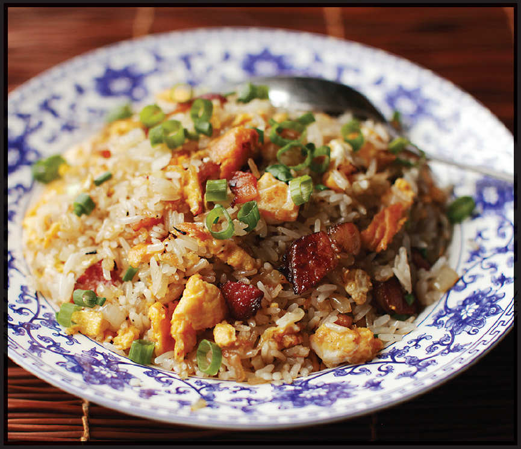

BACON AND EGG FRIED RICE

Yield Serves 2 or 3 |
Active Time 15 minutes Total Time 15 minutes |
If using fresh rice, rinse the rice well before cooking, and once cooked, transfer it to a rimmed baking sheet set by a breezy window or under a fan for 1 hour before continuing with step 2. You can also use lapcheong (Chinese sausage) in place of the bacon. You can use a blowtorch to add wok hei to the rice in step 3.
INGREDIENTS
2 cups cooked white rice (12 ounces/340 g; see Notes)
3 tablespoons (45 ml) peanut, rice bran, or other neutral oil
2 large eggs, lightly beaten
4 slices bacon or Chinese bacon, cut into ¼-inch pieces (see Notes)
1 small onion, finely chopped (4 ounces/120 g)
2 scallions, finely chopped
1 teaspoon (5 ml) light soy sauce or shoyu
1 teaspoon (5 ml) roasted sesame oil
Kosher salt and freshly ground black pepper
This is fried rice that my mom used to make, with American bacon, egg, onion, and plenty of black pepper. I like to use Chinese bacon, which is typically cured a little longer and has a smokier flavor with warm spices like cinnamon and star anise. You can find it at most large Asian supermarkets in the meat section near the Chinese dried sausage. If using Chinese bacon, make sure to cut off the rind, as it will come out inedibly tough in a quick-cooking dish like this.
DIRECTIONS
1 If using day-old rice (see Notes), transfer it to a medium bowl and break the rice up with your hands into individual grains.
2 Heat a wok over high heat until very lightly smoking. Add the vegetable oil and swirl to coat. Reduce the heat to medium. Pour the eggs into the center of the wok and cook, swirling the wok, until the eggs are puffy and golden brown around the edges, about 30 seconds. Use a spatula to release the eggs from the bottom of the wok, carefully flip, cook for another 15 seconds, swirling, then transfer the eggs to a bowl and set aside.
3 Add bacon to the empty wok and cook, stirring and tossing over medium heat until rendered and starting to crisp, about 2 minutes. Add the onion and cook, stirring and tossing constantly, until lightly softened and fragrant, about 1 minute. Transfer the bacon and onion to the bowl with the cooked egg.
4 Return the wok with any rendered bacon fat to high heat until lightly smoking. Add the rice and cook, stirring and tossing, until the rice is pale brown and toasted and has a lightly chewy texture, about 3 minutes (see Notes). Add the scallions and stir-fry until fragrant, about 30 seconds.
5 Return the bacon, onion, and egg to the wok, using the spatula to break up the egg into small pieces as you toss everything together. Add the soy sauce and sesame oil. Season with salt and pepper to taste. Transfer to a serving platter and serve immediately.